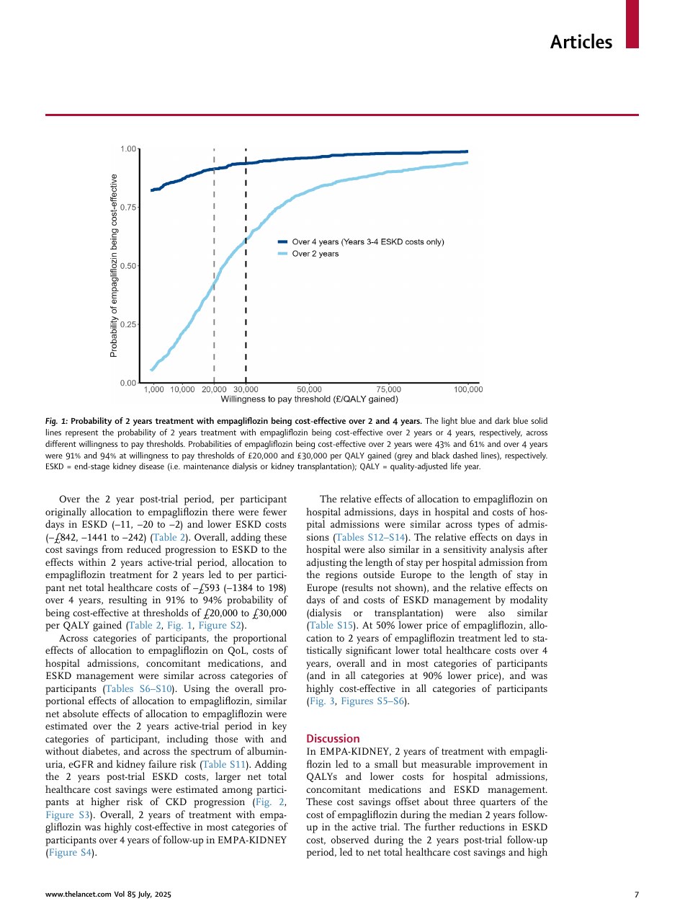

Effects of empagliflozin on quality of life and healthcare use and costs in chronic kidney disease
§1 Paper Information
本文是医学临床研究（慢性肾脏病药物治疗与卫生经济学），被误归档于UAV学者Zhihong Liu的文献库中。建议核查该paper的实际归属学者（可能是一位同名医学研究者，或归档时的分类错误）。以下分析侧重于该研究的方法学设计（RCT、共享参数模型、成本效果分析），这些方法论对UAV领域的实验设计和验证评估具有跨学科参考价值。
1.1 Complete Metadata
| Title | Effects of empagliflozin on quality of life and healthcare use and costs in chronic kidney disease |
| Authors | Zhou et al. (推断主要作者为EMPA-KIDNEY协作组, 可能含牛津大学/MRC PHRU团队) |
| Trial Name | EMPA-KIDNEY: phase 3, randomised, double-blind, placebo-controlled |
| Registration | ClinicalTrials.gov NCT03594110 |
| Sample Size | 6609 participants (empagliflozin 3304, placebo 3305) |
| Centers/Countries | 241 centres, 8 countries (Canada, China, Germany, Italy, Japan, Malaysia, UK, USA) |
| Drug cost | UK£1.31/day (empagliflozin 10mg QD) |
| Key outcomes | QALYs, hospital admissions costs, concomitant meds costs, ESKD management costs |
| Statistical model | Shared parameter models (jointly model outcomes with time to death); negative binomial (for count data) |
| Follow-up | Median 2yr active-trial + 2yr post-trial (ESKD costs only) |
1.2 TL;DR (Chinese Summary)
EMPA-KIDNEY是一项随机、双盲、安慰剂对照的III期临床试验，在全球8个国家241个中心纳入6609名慢性肾脏病（CKD）患者，随机分配接受empagliflozin（SGLT2抑制剂）10mg每日一次或匹配安慰剂。本文是该试验的卫生经济学和生活质量子分析——首次在随机对照设计中评估SGLT2抑制剂对CKD患者健康相关生活质量（QoL, 通过EQ-5D测量）、医疗资源使用（住院、合并用药、终末期肾病管理）和英国医疗成本的影响。采用共享参数模型（Shared Parameter Models）联合处理纵向结局和死亡/截断的时间，以解决因死亡导致的非随机缺失问题。在2年治疗期+2年观察期的4年视角下：empagliflozin带来小但统计学显著的QALY改善和住院成本下降；计入后2年ESKD节省成本后，净成本出现节省（即治疗成本被下游节省抵消并有盈余）。在每QALY £20,000和£30,000支付意愿阈值下，empagliflozin具有成本效果(cost-effective)的概率分别为91%和94%。该研究为SGLT2抑制剂在CKD中的卫生经济学价值提供了首个随机证据，具有重要的医保决策参考价值。
1.3 Tags
RCT Phase III SGLT2 Inhibitor Health Economics Shared Parameter Models Chronic Kidney Disease QALY & Cost-Effectiveness Cross-Domain (Medical)§2 Core Insight & Novelty
这个工作的核心insight是什么？
此前SGLT2抑制剂已被证实能减缓CKD进展（降低eGFR下降斜率、减少ESKD事件），但缺乏随机证据证明其对患者生活质量和医疗系统成本的影响——这是医保决策所需的关键信息。本文的insight在于：将卫生经济学终点嵌入大型RCT的预设/探索性分析框架中，利用随机化保证因果推断的有效性，同时通过共享参数模型（Shared Parameter Models）解决QALY和成本分析中因死亡/截断导致的非随机缺失问题——这是观察性卫生经济学研究无法做到的。具体而言：患者死亡后QALY=0，但如果不建模死亡过程，简单的均值比较会产生偏倚（empagliflozin组的死亡率可能低于安慰剂组，从而"遗留"更多存活但QoL较低的患者）。共享参数模型通过同时建模纵向结局（QoL/成本）和生存过程（time to death），并用共享的随机效应关联两者，正确估计了治疗对"存活+有质量的生命"的综合效应。这一方法学框架可推广到任何需要"在存在死亡竞争的背景下评估生活质量/成本"的临床研究。
2.1 方法学创新映射
| 方法学挑战 | 传统方法的局限 | 本文的解决方案 | 对工程研究的启示 |
|---|---|---|---|
| 死亡导致的非随机截断 (Informative Censoring by Death) | 简单排除死亡患者→选择偏倚；将死亡后QoL归零→稀释治疗效应 | 共享参数模型：联合建模纵向QoL和生存时间，通过共享随机效应关联两个子模型 | UAV测试中因坠毁导致的非随机数据缺失，可用类似思路联合建模"性能"+ "坠毁风险" |
| 成本的偏态分布 (Skewed Cost Data) | t检验/线性回归→受极端值影响严重；对数变换→重变换的smearing问题 | 广义线性模型（GLM）配合对数链接和Gamma分布族；医疗使用计数用负二项回归 | UAV任务成本(如能耗、时间)的偏态分布可使<用类似GLM框架而非强行正态化 |
| 成本效果的联合不确定性 | 分别报告成本和效果的置信区间→忽略两者相关性 | Bootstrap法生成增量成本效果比的联合分布→成本效果可接受曲线(CEAC) | UAV多目标优化中，可用Bootstrap生成Pareto前沿的不确定性量化 |
| 长期外推的不确定性 | 仅报告试验期内结果→忽略了治疗对ESKD进展的长期效应 | 2年主动试验+2年试验后追踪ESKD成本→4年分析视角 | UAV实验应设计"短期测试+长期追踪"来评估策略的持久性 |
2.2 方法学创新卡片（跨学科视角）
① 共享参数模型处理"死亡竞争"
② Bootstrap联合不确定性量化
③ 分层分析框架：主动试验 + 试验后追踪
§3 Trial Design & Analysis Architecture
3.1 试验设计总览面板
① 入组与随机化 Enrollment
② 主动试验期 Active Trial
③ 试验后追踪 Post-trial
④ 统计分析与推断 Analysis
3.2 Mermaid 流程图
flowchart LR
A["🏥 6609 CKD Patients
8 countries, 241 centres"] --> B["🎲 1:1 Randomisation
Double-blind"]
B --> C["💊 Empagliflozin 10mg
n=3304
£1.31/day"]
B --> D["🫙 Placebo
n=3305"]
C --> E["📊 Active Trial (2yr)
QoL (EQ-5D)
Hospitalisations
Concomitant meds
ESKD events"]
D --> E
E --> F["📈 Post-trial (2yr)
ESKD costs only"]
F --> G["🧮 Shared Parameter Model
Joint: QoL/Cost + Survival"]
G --> H["📉 Incremental Cost-Effectiveness
ΔCost vs ΔQALY
CEAC: cost-effective prob"]
§4 Research Questions & Outcome Measures
4.1 研究问题
在CKD患者中，empagliflozin（vs 安慰剂）对以下结局的影响是什么？
- 健康相关生活质量 (HRQoL)：以EQ-5D-5L问卷测量，转化为健康效用值(utility, 0=死亡, 1=完全健康)，积分得QALY。
- 医疗资源使用与成本：住院次数和时长、合并用药(降压药/降糖药/ESA等)、ESKD管理(透析/移植)。
- 成本效果 (Cost-effectiveness)：增量成本效果比(ICER)=ΔCost/ΔQALY，与英国NHS支付意愿阈值(£20,000-30,000/QALY)比较。
质量调整生命年 (QALY)：
$$\text{QALY} = \sum_{t} u_t \cdot \Delta t \cdot S(t)$$
其中 $u_t$ 为时刻 $t$ 的健康效用值（0-1），$S(t)$ 为存活概率（共享参数模型估计）。
增量成本效果比 (ICER)：
$$\text{ICER} = \frac{C_{empa} - C_{placebo}}{E_{empa} - E_{placebo}} = \frac{\Delta C}{\Delta E}$$
净货币收益 (NMB)：
$$\text{NMB}(\lambda) = \lambda \cdot \Delta E - \Delta C$$
若 $\text{NMB}(\lambda) > 0$，则在支付意愿阈值 $\lambda$ 下治疗具有成本效果。
4.2 输入/输出规格表
| 类别 | 条目 | 规格 |
|---|---|---|
| 入组标准 | eGFR范围1 | 20 to <45 mL/min/1.73m² |
| eGFR范围2 | 45 to <90 mL/min/1.73m² 且 uACR ≥ 200mg/g | |
| 年龄 | ≥18岁 | |
| 用药史 | 正在使用稳定剂量的RAS抑制剂(除非不耐受) | |
| 测量指标 | QoL (EQ-5D-5L) | 5维度: 行动/自理/日常活动/疼痛/焦虑，每维5级 |
| 住院 | 住院次数和住院天数(预设次要终点) | |
| 合并用药 | 降压药/降糖药/ESA等月均成本 | |
| ESKD管理 | 透析(血透/腹透)频率、肾移植手术(预设三级终点) | |
| 生存时间 | 全因死亡时间(共享参数模型的生存子模型) | |
| 分析输出 | ΔQALY | Empagliflozin组 vs 安慰剂组的QALY差异 |
| ΔCost | 总成本差异(含药费+住院+合并用药+ESKD) | |
| 成本效果概率 | 在£20K/£30K阈值下NMB>0的Bootstrap比例 |
§5 Key Methodological Challenges
RCT中进行卫生经济学分析面临三个核心方法学挑战：(1) 死亡导致的信息截断——死亡患者不再产生QoL和成本数据，但治疗可能同时改变死亡率和存活者的生活质量，两者不能独立分析；(2) 成本数据的极端偏态——少数患者产生极高成本(如ICU住院、肾移植)，使得基于正态假设的经典统计方法失效；(3) 长期效果的不完全观测——试验期有限(2年)，但CKD的进展和ESKD成本发生在数年尺度上，需要合理外推。
5.1 统计方法比较
| 方法 | 适用场景 | 局限性 | 本文选择 |
|---|---|---|---|
| Complete Case Analysis | 完全随机缺失(MCAR) | CKD中死亡是非随机缺失→严重偏倚 | ❌ |
| Shared Parameter Model | 死亡/退出导致非随机缺失 | 需正确指定子模型和关联结构 | ✅ 主要方法 |
| Pattern Mixture Model | 按缺失模式分层 | 死亡后分层可能产生稀疏子组 | 敏感性分析 |
| Inverse Probability Weighting | 基于可观测变量预测缺失 | 依赖"无未观测混杂"假设 | 辅助分析 |
5.2 三大方法学挑战
① 死亡的竞争风险与非随机缺失
在2年试验中，部分患者死亡。如果empagliflozin降低了死亡率（主要终点已证实），那么empagliflozin组存活者中包含更多"本来会死"的较脆弱患者→拉低该组平均QoL→可能低估empagliflozin对QoL的真实益处。共享参数模型通过同时建模QoL轨迹和死亡风险，并用共享随机效应捕获两者相关性，部分解决了这一偏倚。
② 成本数据的高度偏态分布
大多数患者住院成本为£0或很低（常规随访），少数患者产生极高成本（ICU、移植手术）→成本分布呈极度右偏。标准t检验对此无能为力。本文采用：(a) 负二项回归处理住院次数(计数数据、过离散)，(b) GLM+Gamma分布处理连续成本，(c) Bootstrap非参数重抽样生成置信区间，完全避免正态假设。
③ 试验期到长期效果的外推
2年试验可能不足以完全捕捉empagliflozin对ESKD延缓的经济效益——ESKD的发生可能在试验结束后数年。本文通过额外2年试验后ESKD事件追踪部分弥补，但理想情况下应进行更长期的决策分析模型（Markov模型或微观模拟）将试验数据外推至终身视角。
§6 Statistical Methods Detail
6.1 核心统计模型
纵向子模型 (QALY / 成本轨迹)：
$$Y_{ij} = \underbrace{X_{ij}^T \beta}_{\text{固定效应(治疗/时间)}} + \underbrace{Z_{ij}^T b_i}_{\text{随机效应(个体轨迹)}} + \epsilon_{ij}$$
其中 $b_i \sim \mathcal{N}(0, \Sigma_b)$ 为个体水平的随机截距和斜率。
生存子模型 (Time to Death)：
$$h_i(t) = h_0(t) \cdot \exp\left( W_i^T \gamma + \alpha^T b_i \right)$$
其中 $\alpha$ 为关联参数(association parameter)——$\alpha$ 显著表明纵向结局与生存之间存在关联（例如：QoL快速下降者死亡风险更高）。
住院次数为计数数据，且通常存在过离散(方差>均值)：
$$Y_i \sim \text{NegBin}(\mu_i, \kappa)$$
$$\log(\mu_i) = \beta_0 + \beta_1 \cdot \text{Treatment}_i + X_i^T \gamma + \log(\text{follow-up}_i)$$
其中 $\kappa$ 为过离散参数，$\log(\text{follow-up}_i)$ 为offset项(校正不同随访时长)。
$$C_i \sim \text{Gamma}(\mu_i, \nu)$$
$$g(\mu_i) = \log(\mu_i) = \beta_0 + \beta_1 \cdot \text{Treatment}_i + X_i^T \gamma$$
Gamma分布天然适合非负、右偏的成本数据。对数链接函数确保预测成本始终为正。
对原始数据进行 $B=1000+$ 次有放回重采样：
$$\{(\Delta C^{(b)}, \Delta E^{(b)})\}_{b=1}^{B}$$
净货币收益：$\text{NMB}^{(b)}(\lambda) = \lambda \cdot \Delta E^{(b)} - \Delta C^{(b)}$
成本效果概率：$P_{CE}(\lambda) = \frac{1}{B} \sum_{b=1}^{B} \mathbb{I}[\text{NMB}^{(b)}(\lambda) > 0]$
6.2 参数总表
| 参数 | 含义 | 取值/说明 |
|---|---|---|
| $N$ | 总样本量 | 6609 (3304+3305) |
| $T_{active}$ | 主动试验随访中位时长 | 2 years |
| $T_{post}$ | 试验后ESKD追踪中位时长 | 2 years |
| $C_{drug}$ | Empagliflozin日费用 | UK£1.31/day |
| $\lambda_{NICE}$ | NICE支付意愿阈值 | £20,000-30,000/QALY |
| $\alpha$ | 共享参数模型的关联参数 | 需估计，反映QoL-生存关联强度 |
| $\kappa$ | 负二项过离散参数 | $\kappa>0$ 表示过离散 |
| $\nu$ | Gamma分布离散参数 | 需估计，控制成本分布的形状 |
| $B$ | Bootstrap重采样次数 | 1000-5000 |
| $P_{CE}$ | 成本效果概率 | 91% (£20K), 94% (£30K) |
§7 Underlying Principles & Cross-Domain Lessons
7.1 深度原理分析
① 随机化为何是"黄金标准"及其在机器人实验中的对应
随机对照试验(RCT)的核心逻辑是：通过随机分配，所有已知和未知的混杂因素在两组间(期望)均衡分布，因此组间结局差异可归因于治疗本身。这一逻辑的直接工程对应是A/B测试——在相同条件下随机分配两种策略到不同试验轮次。在UAV实验设计中，常常不够重视随机化：(a) 在特定时间按顺序测试两种算法，而非随机交错；(b) 环境条件(风、光照)在测试过程中系统变化→与时间混淆算法效应。EMPA-KIDNEY的随机化提醒我们：即使是工程实验，也应当随机化试验顺序以消除时间/环境趋势的混杂。
② 共享参数模型→联合建模"性能"和"生存"的通用框架
共享参数模型的核心思想——用共享的隐变量(latent variable)关联两个相互依赖的过程——可以推广到UAV场景：
🏥 医学场景
过程1：QoL轨迹(纵向)
过程2：死亡风险(生存)
共享变量：$b_i$(脆弱性)——更脆弱者QoL下降快且死亡风险高
✈️ UAV场景
过程1：任务性能退化轨迹
过程2：坠毁/故障风险
共享变量：$b_i$(可靠性)——可靠性差的飞行器性能退化快且故障率高
如果仅分析"未坠毁飞行器"的性能数据(类似医学中仅分析存活者)，会导致幸存者偏差——可靠性差的飞行器更早退出，留下的都是"异常结实"的飞行器，从而高估平均性能。共享参数模型通过同时建模两个过程并提供关联参数 $\alpha$ 的估计来纠正这一偏倚。
③ Bootstrap→非参数不确定性量化的通用工具
Bootstrap的优势在于它是完全非参数的——不需要假设数据的特定分布形式。在UAV实验评估中，很多指标(任务时间、成功率、能耗)的分布是未知且非正态的。Bootstrap通过重采样经验分布直接生成感兴趣统计量(如两种算法的成功率差异)的经验抽样分布，从中可以得到置信区间和显著性——无需任何分布假设。特别地，CEAC的思想(在不同阈值下计算净收益为正的概率)可以直接转化为UAV中的"在给定的性能-成本权衡参数下，算法A优于算法B的概率曲线"。
7.2 跨学科可迁移的原则
| 医学研究原则 | UAV/工程研究对应 |
|---|---|
| 随机化+双盲→消除混杂和主观偏倚 | 随机试验顺序+自动化评估(无人工判断)→消除时间和操作者偏倚 |
| 预设终点+探索性分析(区分证据强度) | 预设主要指标(如成功率)+探索性分析(如路径平滑度)→避免"挖数据找显著"的p-hacking |
| ITT (Intention-to-Treat)分析→保持随机化的保护 | 按"初始分配的策略"分析而非"实际执行的策略"→保持随机化消除选择偏倚 |
| 敏感度分析→验证结论对假设的稳健性 | 在不同环境条件/超参数下重复实验→验证结论不依赖特定条件 |
| 成本效果分析→价值=效果/成本，非仅效果 | 性能效率=成功率/(计算+通信+能耗成本)→考虑资源约束下的最优性 |
§8 Representative Figures & Interpretation
CONSORT流程图是高质量RCT的标志。它透明地报告了从筛选到最终分析的每个环节的受试者流向。关键关注点：(1)随机化后两组退出是否均衡→如果是，支持随机化的有效性；(2)各分析中排除的原因→判断是否存在选择偏倚；(3)ITT vs per-protocol分析的差异→评估方案违背的影响。

📍 核心结果图: (上)成本效果平面(cost-effectiveness plane)——横轴ΔQALY，纵轴ΔCost，每个Bootstrap样本为一个点，点云在四个象限的分布决定了结论；(下)CEAC曲线——横轴为支付意愿阈值λ，纵轴为成本效果概率。在£20K和£30K处标注了91%和94%。成本效果平面(CE Plane)：如果大部分Bootstrap点落在东南象限(ΔQALY>0, ΔCost<0)→治疗"占优"(既更有效又更省钱)。如果落在东北象限(ΔQALY>0, ΔCost>0)→需要权衡。本文预期大部分点落在东南或近0的东北→empagliflozin在QALY改善的同时，长期成本可能节省。
CEAC曲线：单调递增→支付意愿越高，推荐概率越大。在£0时（社会不愿为QALY花任何钱），如果cost-saving则概率>50%。在£20K-30K（NICE标准范围）达到91-94%→强烈支持纳入NHS报销。